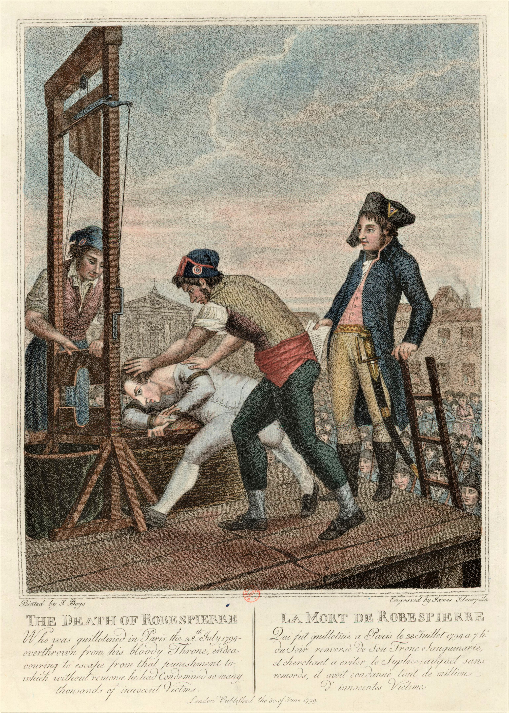
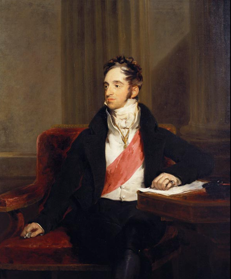
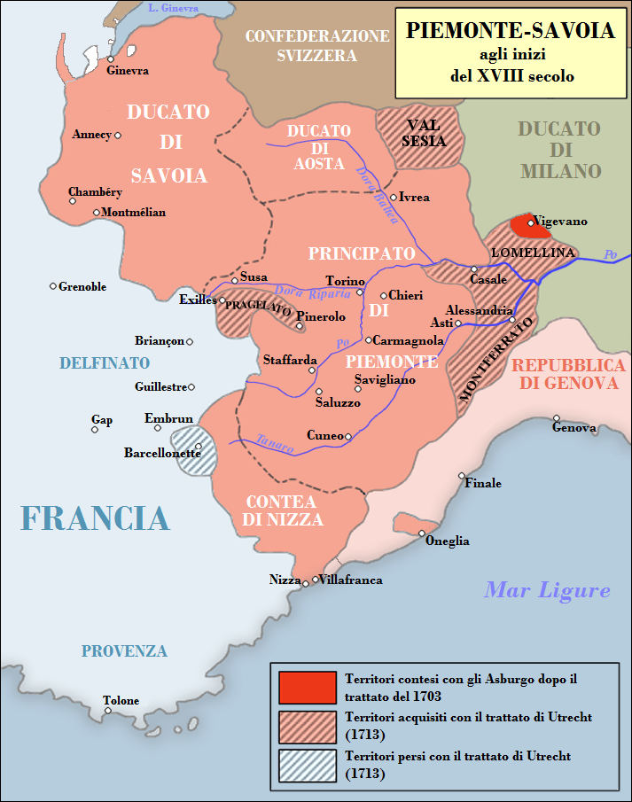
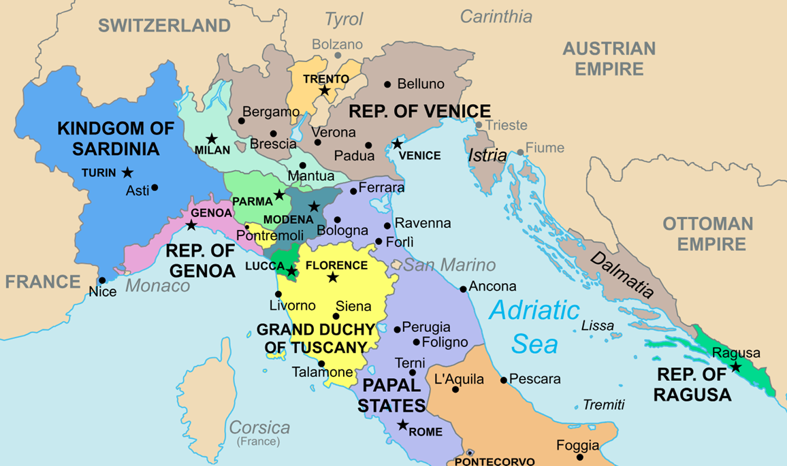
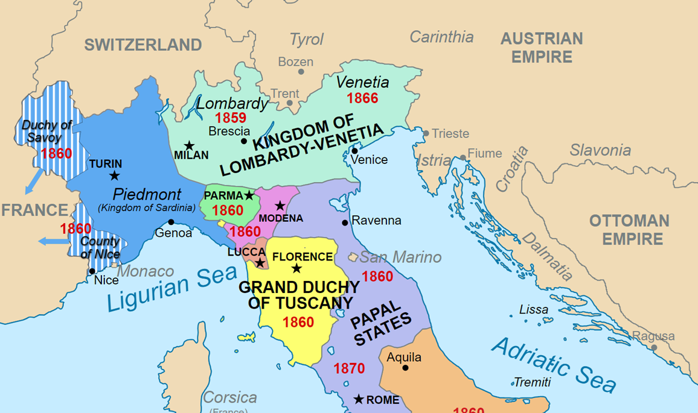
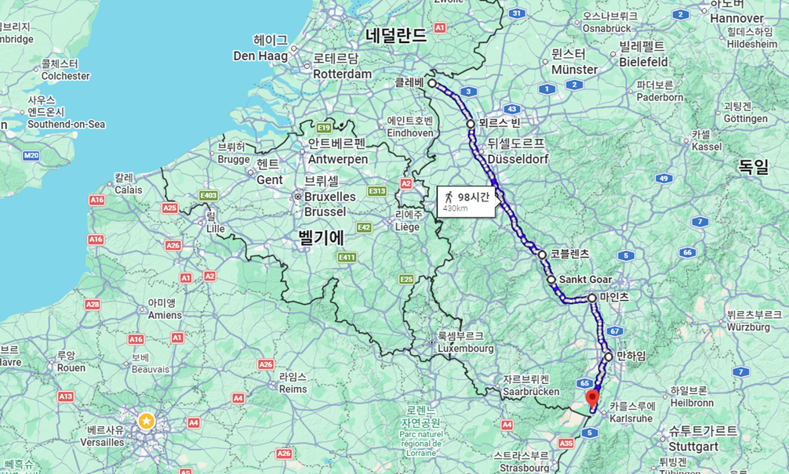
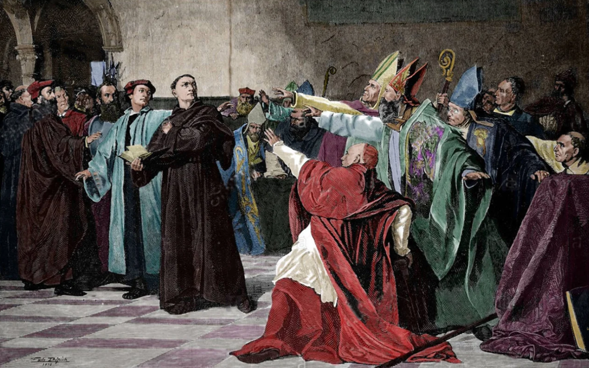

나폴레옹의 겨울 (3) - 거절할 수 없는 제안
게시: 2026-07-06T06:30:57+09:00
메테르니히는 1848년 유럽 대혁명의 결과로 무너질 때까지 유럽을 지배한 빈 체제를 구축한 보수 정치가였습니다. 그런 정치력은 결코 극단적인 근본주의 이념만으로는 내기 어렵습니다. 메테르니히가 그렇게 한 세대를 지배한 체제를 만들 수 있었던 것은 그가 매우 현실적인 타협가였기 때문이었습니다. 그가 매우 관대한 조건의 프랑크푸르트 제안(Propositions de Francfort)을 나폴레옹에게 제시한 것도 바로 그런 타협을 위한 것이었습니다. 하지만 그렇게 관대한 제안을 보내야 하는 입장에서는 굉장히 손해 보는 것 같은 기분이었습니다. 유럽의 균형을 제1 목표로 했던 오스트리아야 그렇다치고, 러시아와 프로이센 입장에서는 그렇게 관대한 제안에 동의하기 어려웠습니다. 그런데도 알렉산드르와 프리드리히 빌헬름에게 그걸 받아들이게 한 것이 외교관 메테르니히의 능력을 보여주는 점입니다. 그런데 대체 메테르니히는 어떻게 두 군주를 설득했을까요? 그는 매우 현실적인 방법을 썼습니다. 메테르니히는 두 군주에게 '오만하기 짝이 없는 나폴레옹은 어차피 이 제안을 받아들이지 않을 것'이라고 설득했던 것입니다. 그럼에도 이 제안을 보내야만 하는 이유에 대해, 메테르니히는 프랑스 국민들과 나폴레옹 사이의 이간질 효과를 제시했습니다. 즉, 연합국이 적대시하는 것은 나폴레옹의 유럽 전체를 정복하려는 팽창주의일 뿐, 프랑스와 프랑스 국민들을 공격하려는 것이 아니라는 것을 세상에 널리 알릴 수 있다는 것이었습니다. 실제로 나폴레옹의 진정한 힘은 그가 엄청난 천재였다거나 프랑스 병사들이 수퍼솔져였기 떄문이 아니라, 유럽 제1의 강국인 프랑스 국민의 지지를 한 몸에 받고 있다는 점에서 나오는 것이었습니다. 지금 당장 연합군이 라인강을 건너 프랑스를 침공하지 않는 이유도, 외세의 침공에 본토가 유린 것을 볼 때, 과연 프랑스 민중이 어떻게 나올지 장담하기 어려웠기 때문이었습니다. 그런데 이렇게 관대한 제안을 나폴레옹이 거부했다는 소식이 퍼지면 프랑스인들의 분노는 연합군이 아니라 나폴레옹에게 돌려질 가능성이 컸습니다. 물론, 만약 나폴레옹이 이 제안을 덥석 받아들인다면, 유럽의 균형을 추구했던 오스트리아로서는 그것 나름대로 좋은 일이었습니다.

(공포정치의 대명사 로베스피에르가 단두대에서 처형당하는 모습입니다. 그가 철권통치를 할 수 있었던 것도 상퀼로트(Sans-culotte)로 대표되는 프랑스 국민들의 지지를 얻었기 때문이요, 그가 이렇게 덧없이 처형되는 것도 프랑스 국민들의 지지를 잃었기 때문이었습니다. 소련이든 미국이든 아무리 군사력이 강해도, 민심을 얻지 못하면 이기기 어렵다는 것을 우리는 베트남, 아프가니스탄, 이라크 등지에서 숱하게 보아왔습니다.) 이렇게 프랑크푸르트 제안은 받아들여져도 좋고 거절되어도 좋다는 메테르니히의 꽃놀이패였습니다. 이 제안은 11월 9일 연합국 대표단의 최종 승인을 받아, 10월에 작센에서 연합군의 포로가 되었던 프랑스 귀족이자 당시 나폴레옹의 외무부 장관 콜랭쿠르의 친척이던 생테냥(Auguste de Saint-Aignan) 남작이라는 사람을 통해 나폴레옹에게 보내졌습니다. 생테냥은 11월 14일 파리에 도착하여 그 문서를 콜랭쿠르에게 전달했고, 나폴레옹에게 곧 그대로 올려졌습니다. 과연 나폴레옹은 그 제안을 읽어보고 어떤 생각을 했을까요?

(당시 프랑크푸르트에서 알렉산드르를 보좌하여 그 회의에 참석했던 러시아의 외무부 장관 카알 네셀로더(Karl Nesselrode)입니다. 그는 메테르니히의 주장과는 달리 나폴레옹이 프랑크푸르트 제안을 수락할 가능성이 매우 높다고 보았는데, 그 내용의 관대함에 더해, 전달책인 생테냥 남작이 콜랭쿠르의 친척이기 때문이었습니다. 콜랭쿠르를 잘 아는 네설로더는 콜랭쿠르가 어떻게 해서든 나폴레옹에게 그 제안을 받아들이도록 설득할 것이라고 보았던 것입니다. 이 초상화는 그가 1814년 알렉산드르 등과 함께 영국을 방문했을 때 영국왕 조지 4세가 300기니(guinea, 지금 가치로는 대략 3억원)를 들여 화가 로렌스에게 그리게 한 것입니다. 그러나 그려야 할 사람은 많고 체류 기간은 짧았기 때문에 이 그림은 나중에 로렌스가 프랑스와 오스트리아 등으로 그를 쫓아 다니며 그린 것입니다. 이 그림은 그에게 주어진 선물이라기보다는 조지 4세가 자신의 궁전에 역사 기록물이자 장식물로 보관하기 위해 그린 것으로서, 지금도 영국 윈저궁의 워털루 체임버(Waterloo Chamber)에 걸려 있습니다.) 나폴레옹은 그 내용의 관대함에 놀라서 그 제안 자체의 진정성을 의심할 정도였다고 합니다. 과거 프로이센이나 오스트리아에게 자신은 막대한 배상금과 함께 영토 할양뿐만 아니라 군비 제한까지 강요했었습니다. 그러나 연합군이 제시하는 것은 이탈리아와 독일, 스페인과 네덜란드, 폴란드 등의 해외 영토 및 영향력만 포기하면 배상금 요구도 하지 않을 것이고 1792년까지 프랑스가 확보했던 영토를 인정해주겠다는 것이었습니다. 이건 패전국에 대한 요구가 아니라 막상막하로 비긴 상대에게 제시하는 평화협정 정도의 조건이었습니다. 여기서 특히 중요한 것이 바로 라인강과 알프스를 프랑스의 자연국경으로 인정한다는 것이었습니다. 즉, 사보이(Savoy, 프랑스어 사부아 Savoie, 이탈리아어 사보이아 Savoia)와 함께, 라인란트(Rheinland, 프랑스어 Rhénanie)는 물론, 벨기에가 프랑스로 귀속된다는 뜻이었습니다. 이건 굉장한 소득이었습니다. 프랑스의 자연국경이라는 개념 자체가 프랑스의 확장 정책에 의해 나온 것으로서, 라인강 서쪽이나 알프스 북쪽도 원래는 프랑스 영토가 아닌 곳이 많았습니다. 루이 14세때도 라인강과 알프스까지 점령하고자 많은 전쟁을 벌였으나 결국 성공하지 못했다가, 프랑스 대혁명 이후에야 겨우 점령했던 지역들이 사보이와 라인란트, 그리고 벨기에였습니다. 이탈리아나 네덜란드, 그리고 라인연방의 동맹국들을 모두 상실한다고 해도, 거기까지만 확보한다면 나폴레옹은 루이 14세보다 더 넓어진 프랑스의 황제가 되는 셈이었습니다. 가령 사보이는 당시 사르데냐 왕국(Regno di Sardegna) 소속이었고, 정확히 이야기하자면 사르데냐 왕가의 발원지였습니다. 원래 11세기 경 사보이 가문(Casa Savoia, 프랑스어 Maison de Savoie)에서 출발했던 공작령이 사르데냐 왕국으로 발전했던 것이기 때문입니다. 나폴레옹 당시만 해도 사보이 귀족층과 관공서에서는 당연히 프랑스어를 썼고, 주민들도 이탈리아어가 아니라 프랑코프로방스어(Franco-Provençal)라는 프랑스계 방언을 쓰고 있었습니다. 그래서 1792년 프랑스 국민의회가 보낸 혁명군이 국경을 넘어 침공하자, 그곳 주민들은 알로브로쥬 국민공회(Assemblée nationale des Allobroges)를 열고 프랑스로의 귀속을 결의했던 것입니다. 라인강 서쪽 지대를 지칭하는 라인란트도 상당히 넓은 땅이었고, 냉전 시절 서독의 수도였던 본(Bonn)도, 마르틴 루터의 종교 개혁으로 유명한 유서 깊은 도시 보름스(Worms)도, 쾰른(Köln)도 여기에 속했습니다. 이 지역의 주민들 대부분은 독일어를 쓰는 독일인이었지만 프랑스 영토로 인정해주겠다는 것이었습니다.

(사르데냐(피에몬테-사보이) 왕국의 18세기 초반의 모습입니다. 사보이 공작령(Ducato di Savoia)이 지도 좌측 상단에 커다랗게 표시되어 있습니다.)

(사르데냐 왕국의 1796년의 지도입니다.)

(사르데냐 왕국의 1843년 지도입니다. 왼쪽 상단에 보면 이탈리아 통일 즈음인 1860년에 사보이와 니스(Nice)를 프랑스에게 넘겨주는 것을 보실 수 있습니다. 그러니까 사보이 왕가는 프랑스에게 고향을 내주는 대가로 이탈리아 통일왕국을 이룬 셈입니다.) 하지만 진짜 중요한 곳은 바로 벨기에였습니다. 전에 설명드렸듯이, 라인강은 네덜란드 저지대로 접어들면서 발강(Waal), 네더레인강(Nederrijn), 에이셜강(IJssel) 등의 분류로 갈라져 흐르며, 네덜란드 자체가 라인강 하류 삼각주로 이루어져 있다고 할 수 있습니다. 라인강을 프랑스의 자연국경으로 인정한다는 것은 네덜란드는 아니지만, 벨기에는 통째로 프랑스 영토가 된다는 뜻이었습니다. 그리고 이 벨기에는, 사보이나 라인란트와는 비교가 되지 않을 정도로 중요한 곳이었습니다.

(오늘날도 프랑스 영토인 스트라스부르 아래쪽부터 라인강변의 주요 도시들을 이은 선입니다. 만약 그때 나폴레옹이 프랑크푸르트 제안에 대해 '콜'을 외쳤다면 저 영토가 프랑스 땅이 되었을 것입니다.)

(1521년 보름스 의회(Diet of Worms)에서의 마르틴 루터의 모습입니다.)

(다시 한 번 보시는 라인강의 지도입니다.) Source : The Life of Napoleon Bonaparte, by William Milligan Sloane Napoleon and the Struggle for Germany, by Leggiere, Michael V With Napoleon's Guns by Colonel Jean-Nicolas-Auguste Noël https://grokipedia.com/page/Frankfurt_proposals https://fr.wikipedia.org/wiki/Propositions_de_Francfort https://commons.wikimedia.org/wiki/File:Europe_1783-1792_en.png https://en.wikipedia.org/wiki/House_of_Savoy https://en.wikipedia.org/wiki/Kingdom_of_Sardinia_(1720%E2%80%931861) https://en.wikipedia.org/wiki/Rhine https://www.worldhistory.org/article/1900/luthers-speech-at-the-diet-of-worms/ https://www.napoleon.org/en/history-of-the-two-empires/articles/200-years-ago-1814-the-french-campaign-step-by-step/ https://en.wikipedia.org/wiki/George_Hamilton-Gordon,_4th_Earl_of_Aberdeen https://en.wikipedia.org/wiki/Rhine https://commons.wikimedia.org/wiki/File:L%27execution_de_Maximilien_de_Robespierre_a_la_guillotine.jpg https://en.wikipedia.org/wiki/Karl_Nesselrode
{kind=link}
{kind=link}